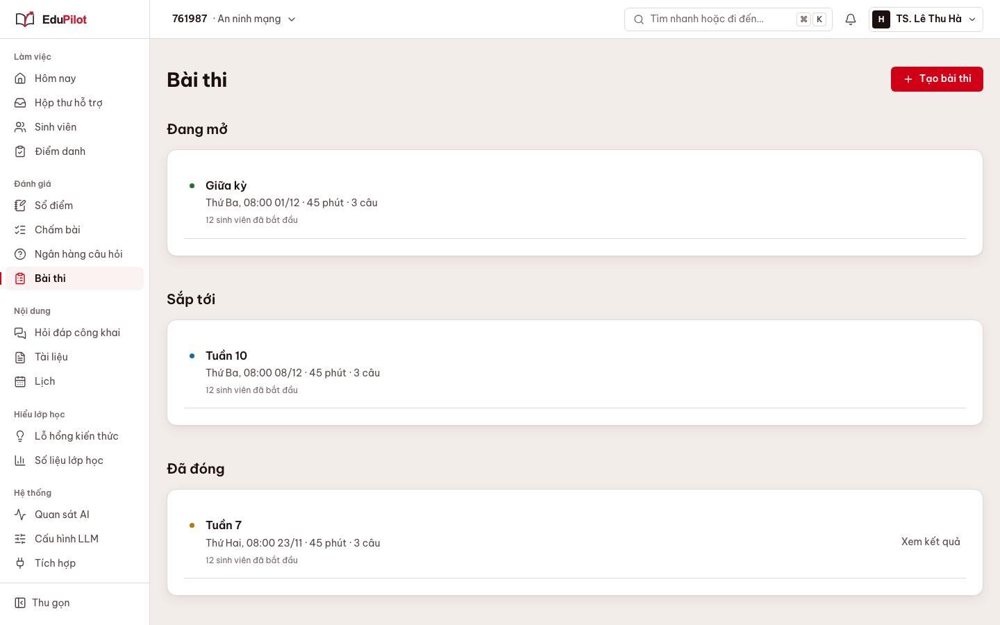
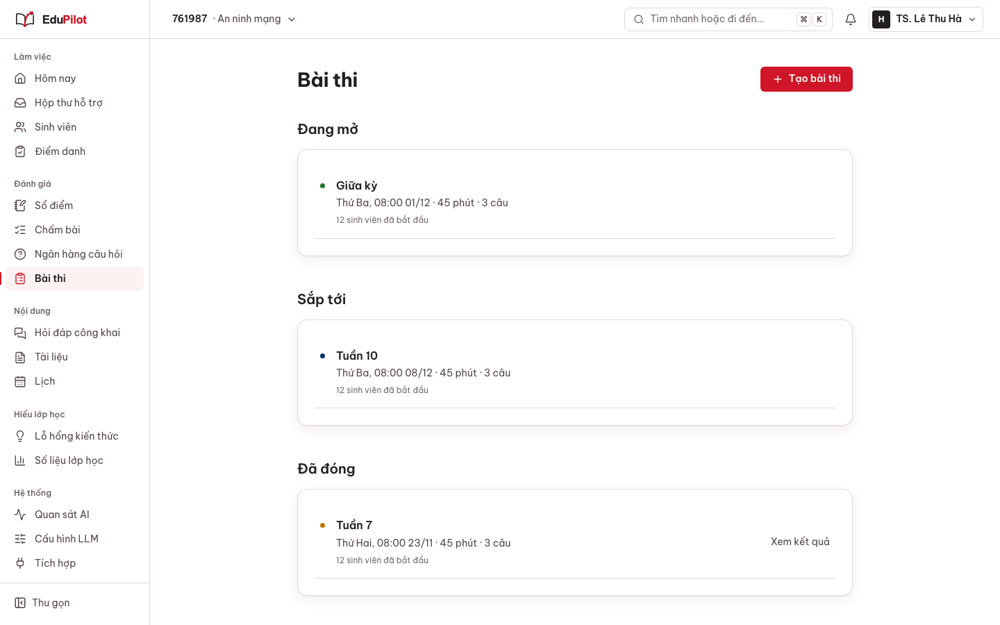
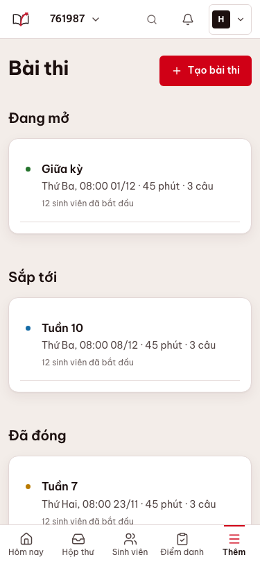
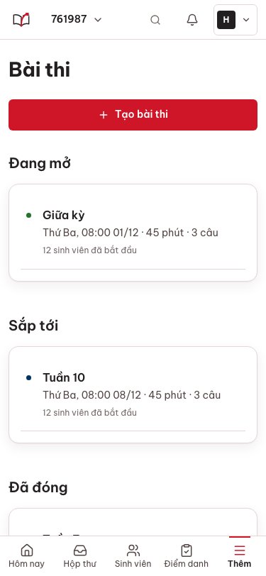
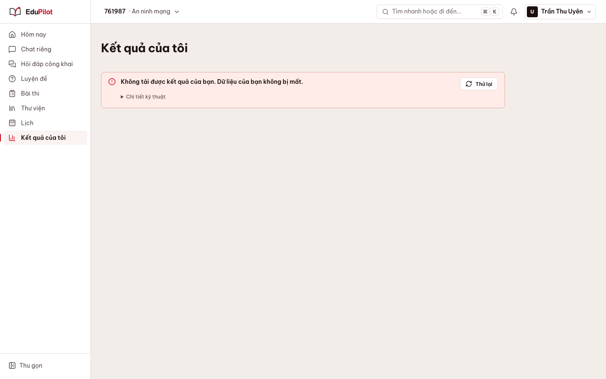
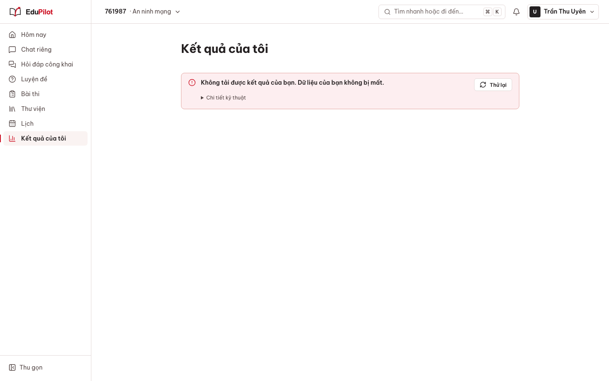
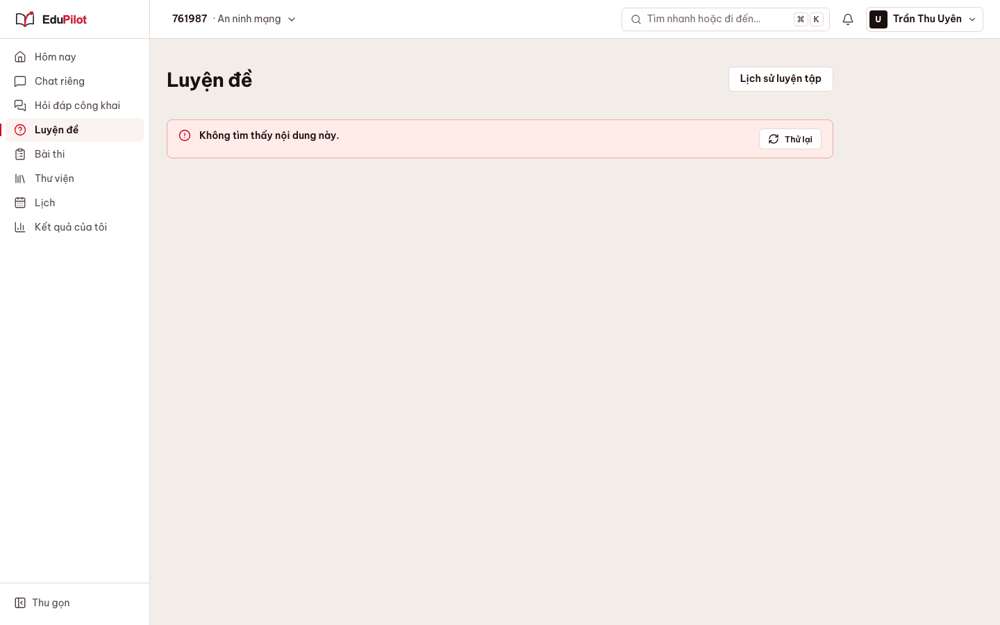
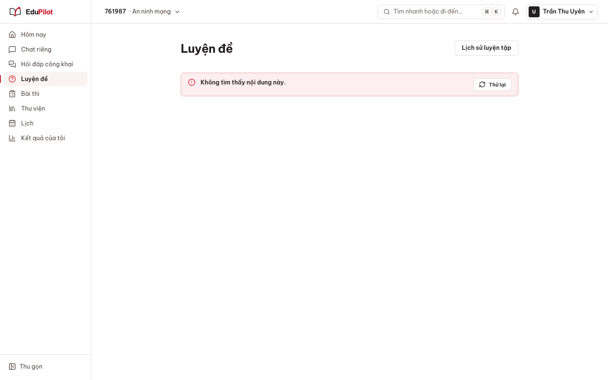
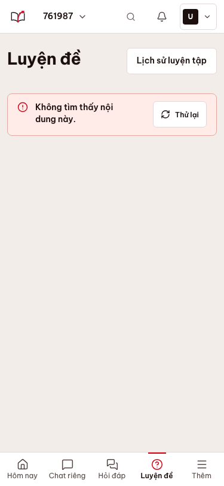
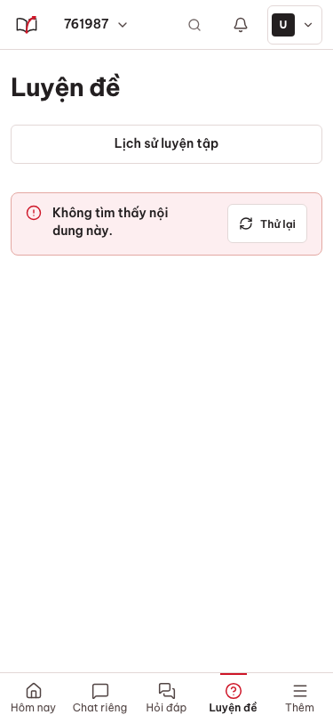

Sprint 10.7 lô 4 — trước / sau (ảnh Playwright, dữ liệu mô phỏng)
exams-1440

Trước (main @ 10.6)
Sau (sprint/10.7-ui-r)exams-375

Trước (main @ 10.6)
Sau (sprint/10.7-ui-r)me-1440

Trước (main @ 10.6)
Sau (sprint/10.7-ui-r)me-375
Trước (main @ 10.6)Sau (sprint/10.7-ui-r)
practice-1440

Trước (main @ 10.6)
Sau (sprint/10.7-ui-r)practice-375

Trước (main @ 10.6)
Sau (sprint/10.7-ui-r)